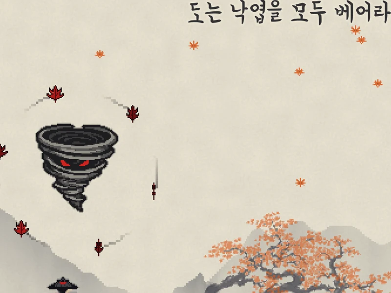
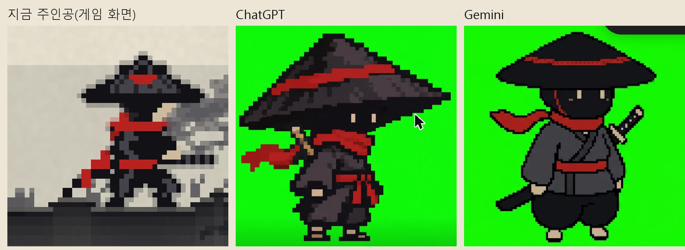

대화 정리
만들면서 나눈 말 가운데 게임을 바꾼 것만 골랐어요. 가운데는 그때 한 말, 오른쪽은 그래서 바뀐 것이에요. 맨 아래는 아직 답을 기다리는 것이에요.
뼈대
무엇을 하는 게임이고, 왜 계속하게 되는가
게임 이름
일필휘지로 정했어요(전 이름 Lossy Brush). 표지, 창 제목, 기획서까지 바꿨어요.
스토리가 없어 지루하다. 맵이 끝나면 영화관처럼 위아래 가리고 게임 도트로 풀어 줘
맵이 끝나면 위아래 띠가 내려오고, 게임 속 픽셀 인물이 몸짓으로 이야기를 이어 가요.
AI 그림을 싫어하는 플레이어도 있다
이야기 장면에서 그림 AI 그림을 모두 빼고 픽셀 인물로만 보여 줘요.
스토리를 하려면 맵을 순차적으로 열어야 하는데, 화첩이라 마음대로 할 수 있다
처음 걷는 길은 한 폭씩, 다 그린 폭은 언제든. 화첩은 갈 곳을 고르는 곳이 아니라 다녀온 곳을 다시 펼쳐 보는 곳이 됐어요. 순서를 건너뛴 대사(뱃사공 작별, 선비의 "또 만났구려")가 더는 어긋나지 않아요.
재미는 있는데 목표나 잘해서 얻는 이점이 적다
다른 게임을 견주어 보니 잘한 결과가 다시 놀이 안으로 돌아왔어요(Devil May Cry 기세, Neon White 지름길과 선물, 마리오 원더 씨앗). 그래서 신품을 받은 폭마다 먹 그릇이 5씩 커져 다음 맵에서 쓸 먹이 늘어요.
신품, 품계를 잘 모르겠다
끝 화면에 기준을 한 줄로 보여 줘요. "쓰인 획 12/20, 다침 2번, 신품은 쓰인 획 14, 다침 1번 이하". 신품은 쓰인 획 70% 이상에 다침 1번 이하예요.
놀이
손으로 하는 일
너무 쉽다
보스가 보통 귀신처럼 원 세 번으로 끝나는 구조가 문제였어요. 보스마다 다른 공략을 줬어요(돌진을 굵은 획으로 막기, 낙엽 벗기기, 물에 비친 모습 베기, 종이 울릴 때 혀 베기).
봉인이 어렵다
원이 조금 벌어져도 가둬지게 넓히고, 실패하면 까닭(벌어짐, 먹 부족, 너무 큼, 귀신 밖)을 보여 줘요.
같은 발판만 반복돼 지루하다
맵마다 다른 땅(징검돌, 연잎, 돌기둥, 모래)을 놓고, 11.12에 맵 14장의 귀신 순서와 간격 반복을 없앴어요.
강천모설에 왜 파도?
같은 장치도 맵마다 다른 모습이에요. 강천모설은 굴러오며 커지는 눈덩이, 총석정은 돌기둥 토막, 죽서루는 솔가지, 청간정은 바다 안개 띠.
화첩에서 바로 들어가지 말고 우클릭하면 들어가게. 마우스를 올릴 때가 아니라 그림 근처에 가면 안내
나그네가 두루마리 곁에 서면 "우클릭하면 들어갑니다"가 깜박이고, 우클릭으로 들어가요.
그림
누가 그리고, 어떻게 보이게 하나
너가 디자인하지 말라니까
멈춘 그림과 장식(표지, 틀, 배경, 나무)은 그림 AI가 그려요. ChatGPT와 Gemini에 같은 부탁으로 한 장씩 받아 비교하고 이긴 쪽에 나머지를 맡겨요. 코드는 움직이는 작은 캐릭터만.
주인공 빼고 나머지 디자인은 별로다. 고품질 픽셀 게임을 배워 다시
귀신, 보스, 이야기 인물을 Gemini 픽셀 그림으로 다시 받았어요. 귀신마다 평소, 덤빌 때, 맞을 때 얼굴이 따로 있어요.
너무 정형적이다. 틀을 깨 봐
글씨 나무. 줄기와 가지가 초서 획인 나무 다섯 종을 심고, 나그네가 다가가면 뿌리부터 가지 끝까지 획 순서대로 써져요.
가을 보스 단풍은 색다르게. 배경에 내리는 단풍이랑 다를 게 없다
회오리귀가 두른 낙엽을 먹 테두리를 두른 짙은 인주빛 큰 잎으로 바꿨어요. 회오리에 휘말려 앞뒤로 뒤집히며 돌고, 지나온 길에 먹 바람 꼬리가 끌리고, 베면 두 쪽으로 갈라져 떨어져요. 다 벗긴 뒤 다시 두를 땐 바깥에서 빨려 들어와요. 보스 12마리를 제 맵 위에서 찍어 보니 배경과 겹쳐 보이는 건 이 낙엽뿐이었어요.
뒤의 옅은 주황이 배경 단풍, 붉은 잎이 베어야 할 회오리귀 낙엽
나그네
주인공 생김새
줄여, 투머치
크기가 아니라 생김새 얘기였어요. 삿갓 밑 하얀 네모 입을 지우고, 치마를 통 넓은 반바지로("딱 좋아"), 발을 작게.
빨간색 다시 완전 붉은색으로
삿갓 띠, 목도리, 허리띠를 인주색으로 되돌렸어요.
가만히 있을 때, 점프할 때 다리가 너무 벌어진다
서기, 몸 낮추기, 뛰기의 발 폭을 좁혔어요.
주인공의 특징만 뽑아 더 작고 귀엽고 매력 있게
특징(검은 큰 삿갓에 인주색 띠, 그늘에 가린 얼굴, 뒤로 날리는 붉은 목도리, 붉은 허리띠, 먹색 옷, 통 넓은 반바지, 작은 발, 등에 멘 칼)만 적은 같은 부탁 글로 ChatGPT와 Gemini에 한 장씩 받았어요. 둘 다 옆모습이 아니라 앞을 비낀 모습으로 그렸어요.
왼쪽부터 지금 게임 속 나그네, ChatGPT, Gemini
화면
멀리서 보지 말고 저번처럼
시야를 다시 270칸으로.
처음 화면이 멀다. 할아버지가 뭘 하는지 모르겠다, 글은 쓰지 말고
표지를 2.5배 당기고, 화공이 붓 한 획으로 나그네를 그려 살려 내고 병풍으로 보내는 몸짓으로 보여 줘요.
노트북 전체 화면에서 칸이 떨린다
한 칸을 실제 화면 픽셀 정수로 맞추고, 남는 위아래는 종이 테두리로 뒀어요.
답을 기다려요
- 나그네 시안
ChatGPT와 Gemini 시안 중 하나를 고르거나 둘 다 아니라고 말해 주세요. 고르면 그 AI로 옆모습, 걷기, 뛰기 장면까지 이어 받아 게임 크기에 맞춰 봐요.
- 잘하면 얻는 것, 다음 하나
11.15 맵 고민에서 남은 후보예요.
- 획을 섞을수록 오르는 기세(베기만 반복하면 떨어짐)
- 맵마다 잘 그으면 크게 줄어드는 획 지름길
- 유물 셋을 모으면 그 맵 장면에 한 줄이 더
- 장마다 본 것 하나가 새 붓법(강물을 보고 흐르는 획)
- 월송정 뒤 빈 폭에 바다를 직접 그려 답하기
- 장면 끝마다 다음이 궁금해지는 질문 한 줄
- 먹 그릇 +5가 느껴지는지
직접 해 보고 약하면 숫자 하나로 키워요.
- 귀신 이름 셋
그림자 무사, 우산귀, 눈치귀가 일본풍이나 요즘 말로 읽힌다는 고증 평이 있어요. 후보는 그림자 나그네, 도롱이귀, 숨은귀예요.
- 땅 금 무늬와 나무 잔가지
AI 그림처럼 보일 수 있다는 첫인상 평이 있었어요. 바꿀지 정해 주세요.